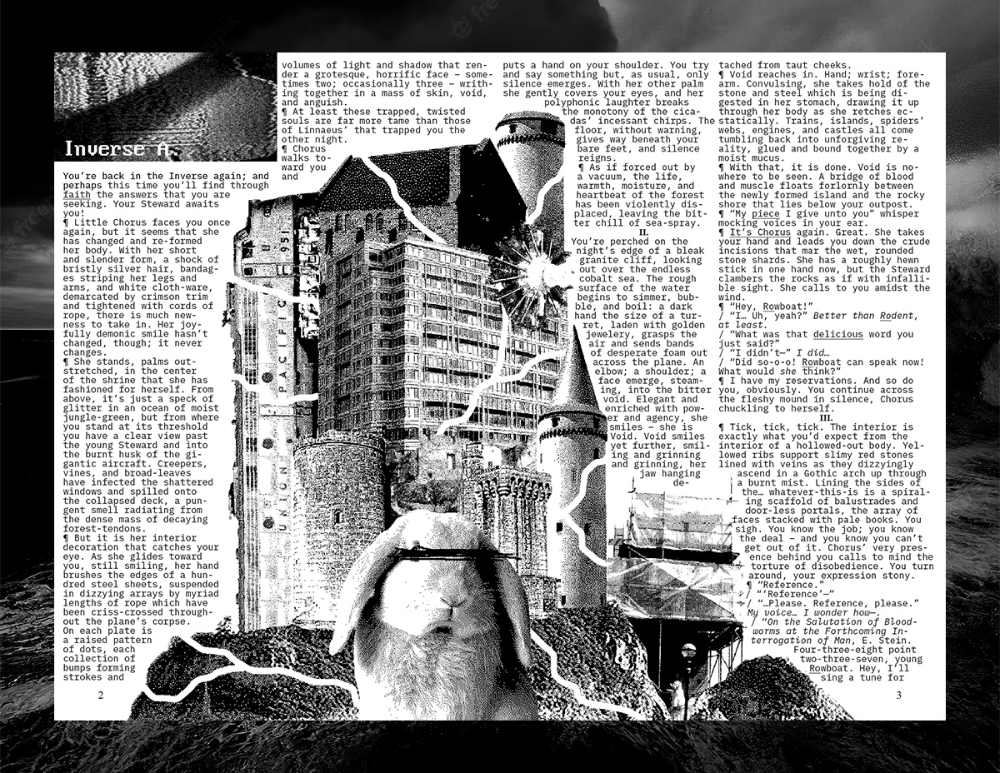

Sly
Dream Spaces
There's a lot to talk about, dream-wise; a myriad of spaces, beings, and sensations. It's all a bit hard to describe so we thought we'd just note down the various things we feel over time, and then see what sense we can make of them!
We tried writing out a dream in this unhinged style made for print; it was cathartic and if we can gather enough here we might do something a bit more substantial!
Recurring Places
These are the kinds of places that seem to show up again and again across planes, conveyed through dreams and super-imposed over our own world.
Chorus and Her Downed Aircraft
We know what this setting is gonna be as soon as it happens. It involves a little one who lives in the husk of a plane which has crashed in the jungle. We'll quote a part of the description we wrote before:
Little Chorus faces you once again, but it seems that she has changed and re-formed her body. With her short and slender form, a shock of bristly silver hair, bandages striping her legs and arms, and white cloth-ware, demarcated by crimson trim and tightened with cords of rope, there is much newness to take in. Her joyfully demonic smile hasn't changed, though; it never changes.
She stands, palms outstretched, in the center of the shrine that she has fashioned for herself. From above, it's just a speck of glitter in an ocean of moist jungle-green, but from where you stand at its threshold you have a clear view past the young Steward and into the burnt husk of the gigantic aircraft. Creepers, vines, and broad-leaves have infected the shattered windows and spilled onto the collapsed deck, a pungent smell radiating from the dense mass of decaying forest-tendons.
But it is her interior decoration that catches your eye. As she glides toward you, still smiling, her hand brushes the edges of a hundred steel sheets, suspended in dizzying arrays by myriad lengths of rope which have been criss-crossed throughout the plane's corpse. On each plate is a raised pattern of dots, each collection of bumps forming strokes and volumes of light and shadow that render a grotesque, horrific face - sometimes two; occasionally three - writhing together in a mass of skin, void, and anguish.
Hospital for the Faceless
This one was at its worst during uni! Not many dreams terrify us, but these episodes were really quite unnerving. They involved an underground hospital, carved deep into the bare earth and filled with an endless array of pipes, ducts, wires, HVAC systems, and spinning blades. Open surgeries were happening in vast dusty caverns, and a heavy silence permeated the entire endless maze of medical activity. Not to mention every figure was faceless, taut skin stretched over where their eyes, nose, and mouth should be. It'sa tired trope we know - but at the time, within its frame of reference, it was genuinely off-putting. Hope those flavours of dream don't return any time soon.
Purple Caverns
The purple caverns are a more recent occurrence for us, and quite a welcome one at that. A great many scenes seem to play out with us sitting on an outcrop, looking out over the endless haze, and conversing with mountainous figures in the distance.
It's a space that, though subterranean, is so expansive it feels as if Heaven itself count not contain it. It's a quiet land - darkness presses in all round, save for the purple glow of the crystalline lake which seems to bring an indecipherable peace. Huge, slow creatures reside here, delivering wisdom in endless low-pitched monologues, like the babbling of some ancient brook. We've listened a little, and though nothing makes sense to our ears, that sensation too brings a lot of stillness and comfort.
Water Creatures
This phenomenon straddles the line between dreams and reality; you can see them during the day, but only if you really open your eyes. Try it, friend! Look out across the harbour - not at the sea or sky but through the horizon - and faint forms will slowly appear, outlines of hulking figures wandering gently atop the boundary between sea and sky. They seem melancholy, but not in a miserable and hopeless way; I think they simply comprehend the reality of the past and future of the land they steward, eschewing the joys and shallow rapids of the present. I wonder if they are the same beings as the ones in the purple caverns?